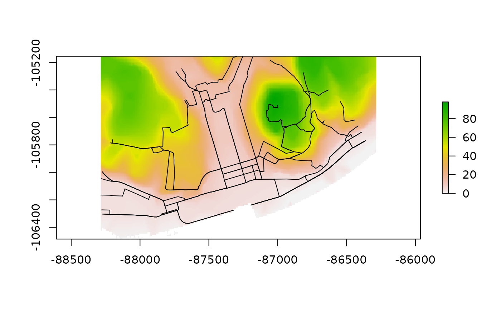
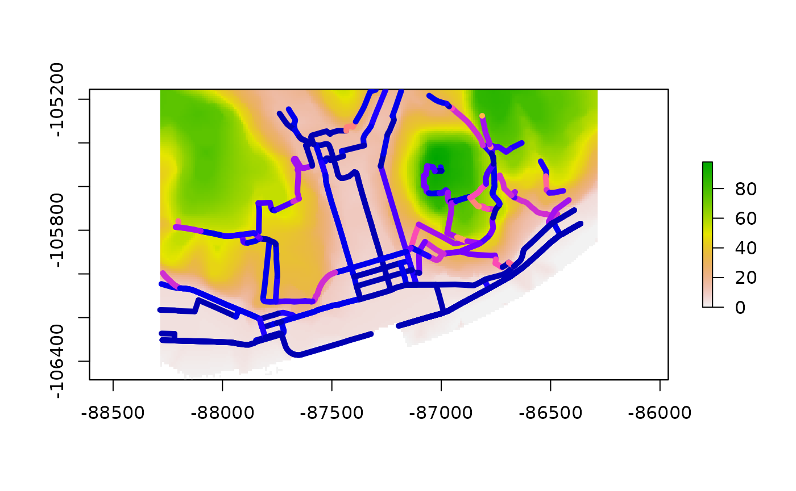
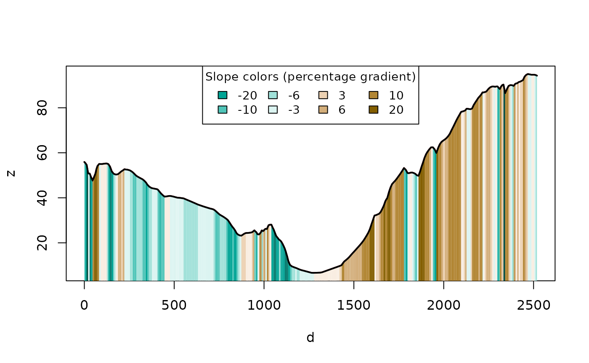
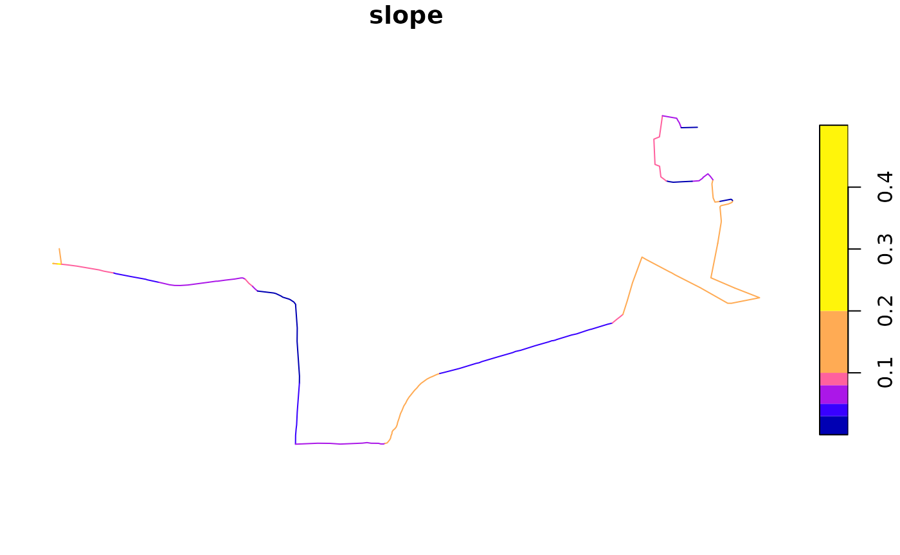
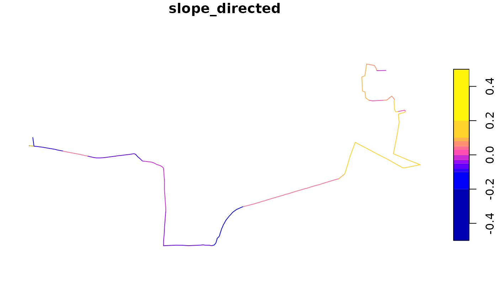
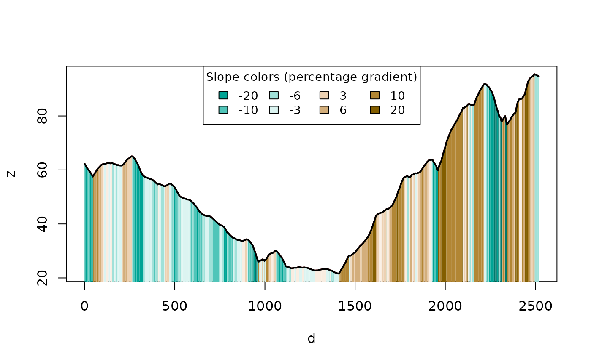

Welcome to the slopes vignette, a type of long-form documentation/article that introduces the core functions and functionality of the slopes package.
Installation
You can install the released version of slopes from CRAN with:
install.packages("slopes")Install the development version from GitHub with:
# install.packages("remotes")
remotes::install_github("ropensci/slopes")Installation for DEM downloads
If you do not already have DEM data and want to make use of the package’s ability to download them using the ceramic package, install the package with suggested dependencies, as follows:
# install.packages("remotes")
remotes::install_github("ropensci/slopes", dependencies = "Suggests")Furthermore, you will need to add a MapBox API key to be able to get DEM datasets, by signing up and registering for a key at https://account.mapbox.com/access-tokens/ and then following these steps:
usethis::edit_r_environ()
MAPBOX_API_KEY=xxxxx # replace XXX with your api keyFunctions
Elevation
elevation_add()Take a linestring and add a third dimension (z) to its coordinateselevation_get()Get elevation data from hosted maptile services (returns a raster)elevation_extract()Extract elevations from coordinatesz_value()retrieves elevation values for each z (as vector of sequential vertices)z_start()retrieves the elevation value of the first linestring verticez_end()retrieves the elevation value of the last linestring verticez_mean()retrieves the elevation mean valuez_max()retrieves the elevation max valuez_min()retrieves the elevation min value
Distance
-
sequential_dist()Calculate the sequential distances between sequential coordinate pairs
Slope
slope_vector()calculates the slopes associated with consecutive elements in one dimensional distance and associated elevations.slope_distance()calculates the slopes associated with consecutive distances and elevations.slope_distance_mean()calculates the mean average slopes associated with consecutive distances and elevations.slope_distance_weighted()calculates the slopes associated with consecutive distances and elevations, with the mean value associated with each set of distance/elevation vectors weighted in proportion to the distance between each elevation measurement, so longer sections have proportionally more influence on the resulting gradient estimate.slope_raster()Calculate slopes of linestrings based on local raster mapslope_matrix()Calculate the gradient of line segments from a 3D matrix of coordinatesslope_matrix_weighted()Calculate the weighted gradient of line segments from a 3D matrix of coordinatesslope_xyz()Calculates the slope associated with linestrings that have xyz coordinates
Plot
-
plot_dz()Plot a digital elevation profile based on xyz data -
plot_slope()Plots the slope profile associated with a linestring with base R graphics
Package datasets
The slopes package comes with some datasets to play with:
Linestrings:
-
lisbon_road_segment: a single road segment in Lisbon (XY) -
lisbon_route: a route with some variation in elevation in Lisbon (XY) -
cyclestreets_route: a bike route in Leeds (XY)
Road network:
-
lisbon_road_network: a sample of road segments in downtown Lisbon -
magnolia_xy: a sample of road segments in center Seattle, in the Magnolia neighborhood
Digital elevation model (DEM):
-
dem_lisbon_rastera DEM of downtown Lisbon (EPSG:3763)
Examples
Load the package in the usual way. We will also load the sf library:
The minimum input data requirement for using the package is an sf object containing LINESTRING geometries.
You can also create sf objects from a matrix of coordinates, as illustrated below (don’t worry about the details for now, you can read up on how all this works in the sf package documentation):
m = cbind(
c(-9.1333, -9.134, -9.13),
c(38.714, 38.712, 38.710)
)
sf_linestring = sf::st_sf(
data.frame(id = 1),
geometry = st_sfc(st_linestring(m)),
crs = 4326
)
class(sf_linestring)
#> [1] "sf" "data.frame"
st_geometry_type(sf_linestring)
#> [1] LINESTRING
#> 18 Levels: GEOMETRY POINT LINESTRING POLYGON MULTIPOINT ... TRIANGLEmaybe remove this? or add step 1 and step 2 again.
Single road segment + no DEM
You can check your input dataset is suitable with the functions class() from base R and st_geometry_type() from the sf package, as demonstrated below on the example object lisbon_road_segment that is contained within the package:
sf_linestring = lisbon_road_segment
class(sf_linestring)
#> [1] "sf" "tbl_df" "tbl" "data.frame"
st_geometry_type(sf_linestring)
#> [1] LINESTRING
#> 18 Levels: GEOMETRY POINT LINESTRING POLYGON MULTIPOINT ... TRIANGLEA quick way of testing if your object can have slopes calculated for it is to plot it in an interactive map and to check that underneath the object there is indeed terrain that will give the linestrings gradient:
library(tmap)
tmap_mode("view")
tm_shape(sf_linestring) +
tm_lines(lwd = 5) +
tm_basemap(leaflet::providers$Esri.WorldTopoMap)Imagine you want to calculate the gradient of the route shown above. You can do this as a two step process as follows.
Step 1: add elevations to each coordinate in the linestring (requires a MapBox API key):
sf_linestring_xyz = elevation_add(sf_linestring) # dem = NULL
#> Loading required namespace: ceramic
#> Preparing to download: 9 tiles at zoom = 18 from
#> https://api.mapbox.com/v4/mapbox.terrain-rgb/With the argument dem = NULL, the function downloads the necessary elevation information from Mapbox. You can use this argument with a local digital elevation model (dem = ...).
You can check the elevations added to the new sf_linestring_xyz object by printing its coordinates, as follows (note the new Z column that goes from above 87 m above sea level to only 79 m in a short distance).
st_coordinates(sf_linestring_xyz)
#> X Y Z L1
#> [1,] -87064.34 -105506.3 88.0 1
#> [2,] -87065.47 -105514.3 87.7 1
#> [3,] -87066.60 -105522.3 86.3 1
#> [4,] -87067.73 -105530.3 86.3 1
#> [5,] -87068.86 -105538.2 86.2 1
#> [6,] -87069.99 -105546.2 84.4 1
#> [7,] -87075.24 -105548.4 83.1 1
#> [8,] -87080.48 -105550.5 81.5 1
#> [9,] -87080.06 -105560.1 80.8 1
#> [10,] -87079.65 -105569.6 79.8 1
#> [11,] -87079.23 -105579.2 78.5 1
#> [12,] -87078.81 -105588.8 77.7 1
#> [13,] -87078.39 -105598.3 76.4 1
#> [14,] -87069.73 -105601.7 80.0 1
#> [15,] -87068.93 -105608.4 79.5 1
#> [16,] -87068.14 -105615.1 78.5 1
#> [17,] -87067.34 -105621.7 77.6 1
#> [18,] -87062.16 -105625.7 79.5 1
#> [19,] -87056.99 -105629.6 79.8 1You can use the z_ functions to extract such values:
z_value(sf_linestring_xyz) # returns all the elevation values between xy coordinates
#> [1] 88.0 87.7 86.3 86.3 86.2 84.4 83.1 81.5 80.8 79.8 78.5 77.7 76.4 80.0 79.5
#> [16] 78.5 77.6 79.5 79.8
z_mean(sf_linestring_xyz) # elevation mean value
#> [1] 81.66316
z_min(sf_linestring_xyz) # elevation min value
#> [1] 88
z_max(sf_linestring_xyz) # elevation max value
#> [1] 88
z_start(sf_linestring_xyz) # first z
#> [1] 88
z_end(sf_linestring_xyz) # last z
#> [1] 79.8Step 2: calculate the average slope of the linestring
slope_xyz(sf_linestring_xyz)
#> 1
#> 0.1394946The result, just over 0.2, tells us that it’s quite a steep slope: a 21% gradient on average.
Route + available DEM
Using the slopes package we can estimate the gradient of individual road segments. When these segments are combined into routes, we then need a means of assessing the hilliness of the entire route. A range of indices can be used to represent route hilliness. The choice of which index is most appropriate may be context dependent (see the introducion to slopes vignette).
Again, let us use the same function with a entire route, lisbon_route, also available in the package:
sf_route = lisbon_route
class(sf_route)
#> [1] "sf" "tbl_df" "tbl" "data.frame"
st_geometry_type(sf_route)
#> [1] LINESTRING
#> 18 Levels: GEOMETRY POINT LINESTRING POLYGON MULTIPOINT ... TRIANGLE
tm_shape(sf_route) +
tm_lines(lwd = 3) +
tm_basemap(leaflet::providers$Esri.WorldTopoMap)Step 1: add elevations to each coordinate in the route:
sf_route_xyz = elevation_add(sf_route)
#> Loading required namespace: ceramic
#> Preparing to download: 12 tiles at zoom = 15 from
#> https://api.mapbox.com/v4/mapbox.terrain-rgb/Step 2: calculate the average slope of the route
slope_xyz(sf_route_xyz)
#> 1
#> 0.07681812The result shows a 7.7% gradient on average.
Now, if you already have a DEM, you can calculate the slopes directly as follows, with slope_raster():
class(dem_lisbon_raster)
#> [1] "RasterLayer"
#> attr(,"package")
#> [1] "raster"
slope_raster(routes = sf_route,
dem = dem_lisbon_raster)
#> 1
#> 0.07817098The result shows a 7.8% gradient on average. As you can see, the retrieved result from elevation information available in Mapbox and in this Digital Elevation Model, is quite similar. (See more about these differences in Verification of slopes.)
Route with xyz coordinates
If your linestring object already has X, Y and Z coordinates (e.g. from a GPS device), you can use the slope_ functions directly.
# for a line xz
x = c(0, 2, 3, 4, 5, 9)
elevations = c(1, 2, 2, 4, 3, 1) / 10
slope_vector(x, elevations)
#> [1] 0.05 0.00 0.20 -0.10 -0.05
# for a path xyz
xy = st_coordinates(sf_linestring)
dist = sequential_dist(xy, lonlat = FALSE)
elevations = elevation_extract(xy, dem_lisbon_raster)
slope_distance(dist, elevations)
#> [1] -0.047226259 -0.040883072 -0.025032918 -0.061124557 -0.017447060
#> [6] -0.062426272 -0.123580541 0.033705378 0.004292243 -0.040360003
#> [11] -0.151671893 -0.182367906 0.409246854 -0.034463974 -0.098406640
#> [16] -0.161798173 0.076261379 0.100654228
slope_distance_mean(dist, elevations)
#> [1] 0.09283052
slope_distance_weighted(dist, elevations)
#> [1] 0.09501323In any case, to use the slopes package you need elevation points, either as a vector, a matrix or as a digital elevation model (DEM) encoded as a raster dataset.
Calculating and plotting gradients
Road network
Typical use cases for the package are calculating the slopes of geographic objects representing roads or other linear features. These two types of input data are represented in the code output and plot below.
# A raster dataset included in the package:
class(dem_lisbon_raster) # digital elevation model
#> [1] "RasterLayer"
#> attr(,"package")
#> [1] "raster"
summary(raster::values(dem_lisbon_raster)) # heights range from 0 to ~100m
#> Min. 1st Qu. Median Mean 3rd Qu. Max. NA's
#> 0.000 8.598 30.233 33.733 55.691 97.906 4241
raster::plot(dem_lisbon_raster)
# A vector dataset included in the package:
class(lisbon_road_network)
#> [1] "sf" "tbl_df" "tbl" "data.frame"
plot(sf::st_geometry(lisbon_road_network), add = TRUE)
Calculate the average gradient of each road segment as follows:
lisbon_road_network$slope = slope_raster(lisbon_road_network, dem = dem_lisbon_raster)
summary(lisbon_road_network$slope)
#> Min. 1st Qu. Median Mean 3rd Qu. Max.
#> 0.00000 0.01246 0.03534 0.05462 0.08251 0.27583This created a new column, slope that represents the average, distance weighted slope associated with each road segment. The units represent the percentage incline, that is the change in elevation divided by distance. The summary of the result tells us that the average gradient of slopes in the example data is just over 5%.
This result is equivalent to that returned by ESRI’s Slope_3d() in the 3D Analyst extension, with a correlation between the ArcMap implementation and our implementation of more than 0.95 on our test dataset (we find higher correlations on larger datasets - see the verification of slopes:
cor(
lisbon_road_network$slope, # slopes calculates by the slopes package
lisbon_road_network$Avg_Slope # slopes calculated by ArcMap's 3D Analyst extension
)
#> [1] 0.9770436We can now visualise the average slopes of each route calculated by the slopes package as follows:

Elevation profile
Taking the first route example, imagine that we want to go from from the Santa Catarina area in the East of the map to the Castelo de São Jorge in the West. This route goes down a valley and up the other side:
# library(tmap)
# tmap_mode("view")
qtm(lisbon_route)We can convert the lisbon_route object into a 3d linestring object with X, Y and Z coordinates, using the elevation values stored in the DEM, as follows:
lisbon_route_xyz = elevation_add(lisbon_route, dem_lisbon_raster) We can now visualise the elevation profile of the route as follows:
plot_slope(lisbon_route_xyz)
Splitting the network
The lisbon_route_xyz example is useful but often you will want to calculate the slopes not of an entire route (in this case one that is 2.5 km long) but of segments. There are various ways to split segements, including using algorithms from other packages or GIS programs, but here we’ll use the stplanr function rnet_breakup_vertices() (see vignette("roadnetworkcycling") for an example of this function working on a large road network):
sf::st_length(lisbon_route_xyz) # check route length: 2.5 km
#> 2518.951 [m]
lisbon_route_segments = stplanr::rnet_breakup_vertices(lisbon_route_xyz)
summary(sf::st_length(lisbon_route_segments)) # mean of 50 m
#> Min. 1st Qu. Median Mean 3rd Qu. Max.
#> 0.000 0.000 7.631 46.647 65.887 409.479We can now calculate the slope for each of these segments.
Directed slopes
The route has a direction that is implicit in the order of the vertices and segments. From the perspective of someone travelling along the route, the slopes have a direction which is important: it’s easier to go uphill than downhill. To calculate the slopes with direction, add the directed argument as follows.
lisbon_route_segments$slope_directed = slope_xyz(lisbon_route_segments, directed = TRUE)
summary(lisbon_route_segments$slope_directed)
#> Min. 1st Qu. Median Mean 3rd Qu. Max. NA's
#> -0.202564 -0.062971 0.009981 0.005019 0.085559 0.202564 24Plotting the directed and undirected slopes side-by-side shows the importance of considering slope direction for route planning, which may want to avoid steep hills going uphill but not downhill for certain types of travel, for example.
breaks = c(0, 3, 5, 8, 10, 20, 50)
breaks_proportion = breaks / 100
breaks_directed = c(-rev(breaks_proportion), (breaks_proportion[-1]))
plot(lisbon_route_segments["slope"], breaks = breaks_proportion)
plot(lisbon_route_segments["slope_directed"], breaks = breaks_directed)
Using elevation_add() with and without a dem = argument
If you do not have a raster dataset representing elevations, you can automatically download them by omitting the argument dem = NULL (a step that is automatically done in the function elevation_add() shown in the basic example above, results of the subsequent code chunk not shown):
dem_mapbox = elevation_get(lisbon_route)
lisbon_road_proj = st_transform(lisbon_route, raster::crs(dem_mapbox))
lisbon_route_xyz_mapbox = elevation_add(lisbon_road_proj, dem = dem_mapbox)
plot_slope(lisbon_route_xyz_mapbox)As outlined in the basic example above this can be done more concisely, as:
lisbon_route_xyz_auto = elevation_add(lisbon_route) #dem = NULL
plot_slope(lisbon_route_xyz_auto)
Note that the elevations shown in both plots differ, since the first is based on DEM elevation available, and the second is based in Mapbox elevation.
Commulative elevation change
The following example calculate the elevations of a route in Leeds, and plots its commutative sum along the route (not evaluated).
cyclestreets_xyz = elevation_add(cyclestreets_route)
plot_slope(cyclestreets_xyz)
plot(cumsum(cyclestreets_xyz$distances), cumsum(cyclestreets_xyz$elevation_change))